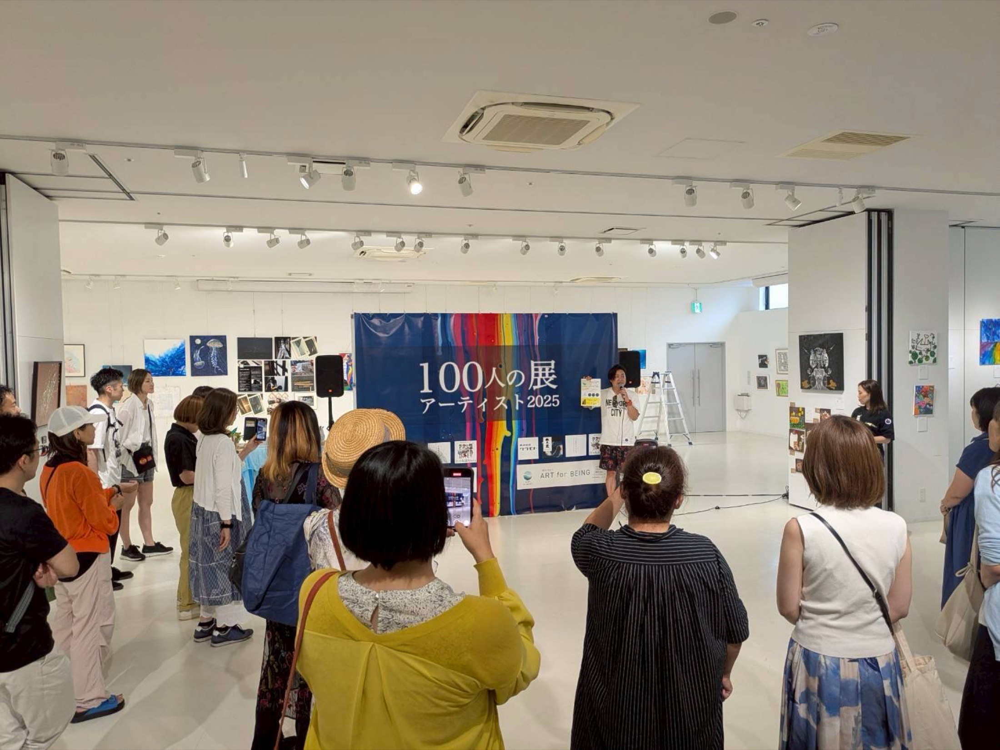
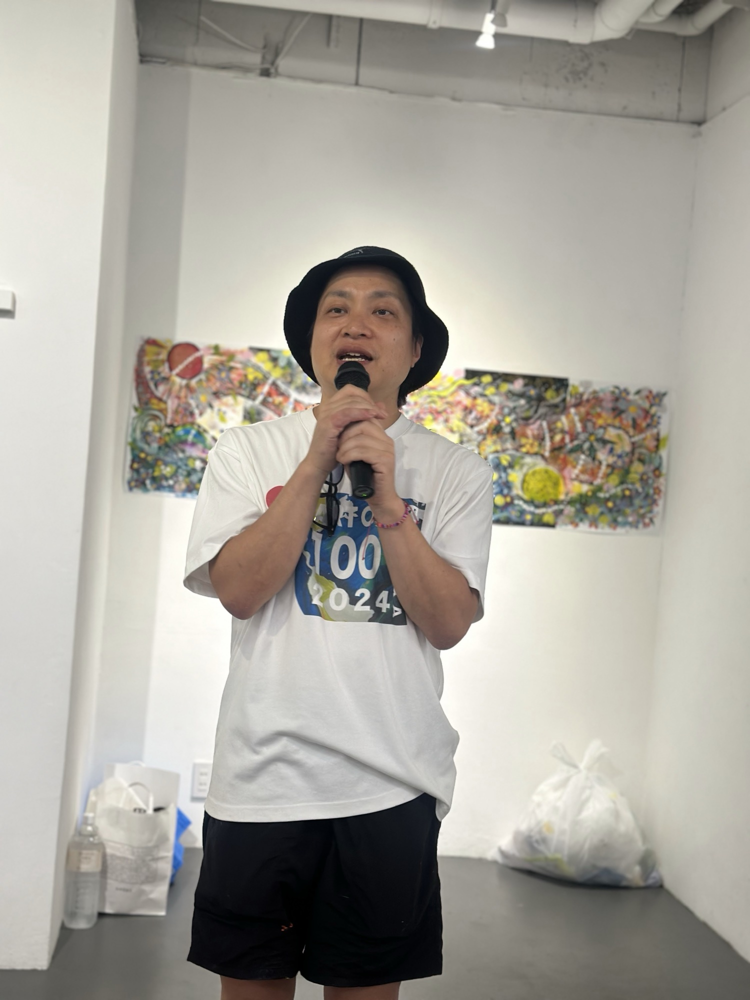
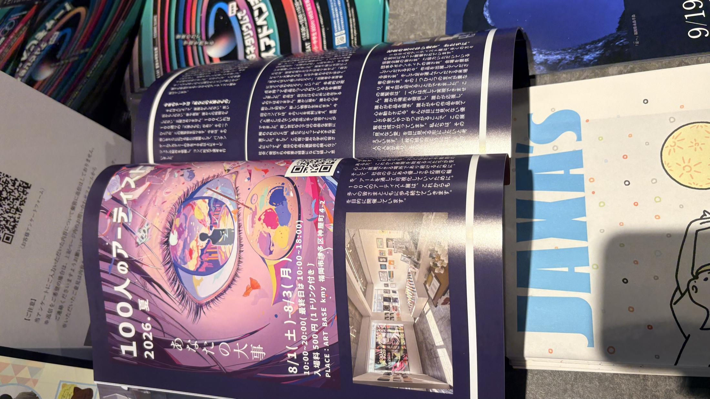

Produce / Case Study
人が主役になる
場をつくる。
代表プロジェクト「100人のアーティスト展」を、目的、企画、参加の仕組み、結果から読み解きます。
WHYなぜつくるのか
表現することに、
肩書はいらない。
プロ・アマチュアなどの枠にとらわれず、人が表現できる場をつくる。その考えを、一度きりの言葉ではなく、実際に参加できる展示として形にしています。
WHAT何をつくったか
100人の
アーティスト展
第1回は2024年8月、第2回は2025年8月、第3回は2026年2月、第4回は2026年8月に開催。作品を並べるだけでなく、出展者自身が運営に関わる参加型の展示です。

HOWどう参加を設計したか
参加する人と、
運営する人を分けない。
5,000円
大人の出展料。
無料
子ども・障害者の出展料。
出展者が中心
スタッフ・運営は、出展者が中心となって参加します。
RESULT / 2024–2026
積み重なったのは、
開催回数だけではない。
4開催回数
441累計出展者
1,530累計来場者



Media
FUKRATS
掲載
フリーマガジン「FUKRATS（フクラッツ）」に掲載。媒体名以外の号数・発行日・転載条件は、一般公開前に確認します。